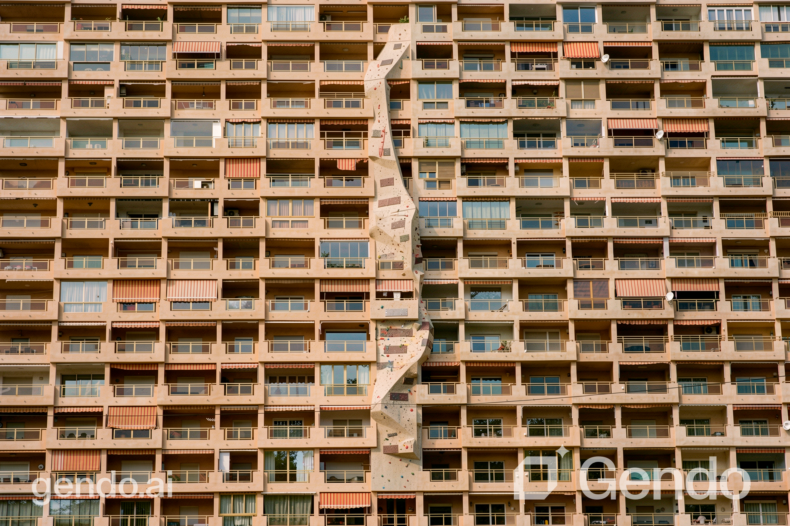

RockHard
RockHard is an end-to-end machine learning system that transforms ordinary building facades into analysed climbing environments. Given a photograph of a building, the system automatically detects climbable architectural features — ledges, windowsills, protrusions, ornaments, and pipes — constructs a weighted graph over those features, finds an optimal climbing route using A* pathfinding informed by learned biomechanics, grades the route on the standard V-scale, and generates a photorealistic visualisation of the facade with integrated climbing features.
The project originally set out to analyse and generate climbing routes on natural cliff faces. Early prototypes ran hold detection and depth analysis directly on rock photographs, but natural rock surfaces proved intractable — the irregular, self-similar geometry of cliff faces made reliable depth estimation nearly impossible, and detected "holds" were indistinguishable from background texture. The team pivoted to building facades, where the structured geometry, flat planes, and distinct architectural features — sills, cornices, pipes, brackets — gave the detection pipeline a far more tractable problem to solve.
With Bethanie Khoo, Lim Han Xue, Muhammad Hazim
Hold Detection
Detecting climbable features from a single photograph is a multi-class problem — a projecting sill looks entirely different from an exposed pipe or a decorative bracket. Rather than relying on any single method, the system runs four independent detectors in parallel (classical computer vision, depth-based protrusion analysis, a fine-tuned YOLOv8 model, and colour segmentation) and fuses their outputs through weighted ensemble voting.


Hold detection on rock face (left) · MediaPipe pose extraction from climbing footage (right)
Model Training
A gradient boosting route classifier was trained on annotated climbing transition data to predict which moves a real climber would choose. The most predictive features turned out to be geometric — vertical displacement (23.5% importance) and total reach distance (14.1%) — confirming that spatial geometry, not hold appearance, drives route selection.

Route transition model training
Route Generation
Each detected hold becomes a node in a directed graph. Edges are weighted by reach distance, grip difficulty, and direction — upward moves are rewarded, downclimbing is penalised. A* search finds the optimal path from the lowest to the highest hold. Where gaps exceed the maximum biomechanical reach, the system automatically suggests supplementary holds to bridge them.
A* route plotted on a residential facade — green holds are existing features, orange are suggested additions
Web Application
The full pipeline is exposed through an interactive Flask web application. Users can upload any facade photograph, auto-detect holds or place them manually, generate and adjust routes, target a specific V-scale difficulty grade, and trigger an AI facade redesign render — all through a browser interface with no technical setup required.

RockHard web application — route overlay, V-scale grading, and hold analysis
Outcomes
The final stage uses Stable Diffusion inpainting and the Gendo.ai architectural rendering API to produce photorealistic visualisations of facades with integrated climbing wall structures. The system generates a continuous strip mask along the route path — rather than isolated hold spots — prompting the AI to render a coherent climbing installation as it would appear in a real building.

Gendo.ai facade redesign — climbing wall integrated into residential facade

Gendo.ai facade redesign — climbing wall integrated into a curved architectural facade